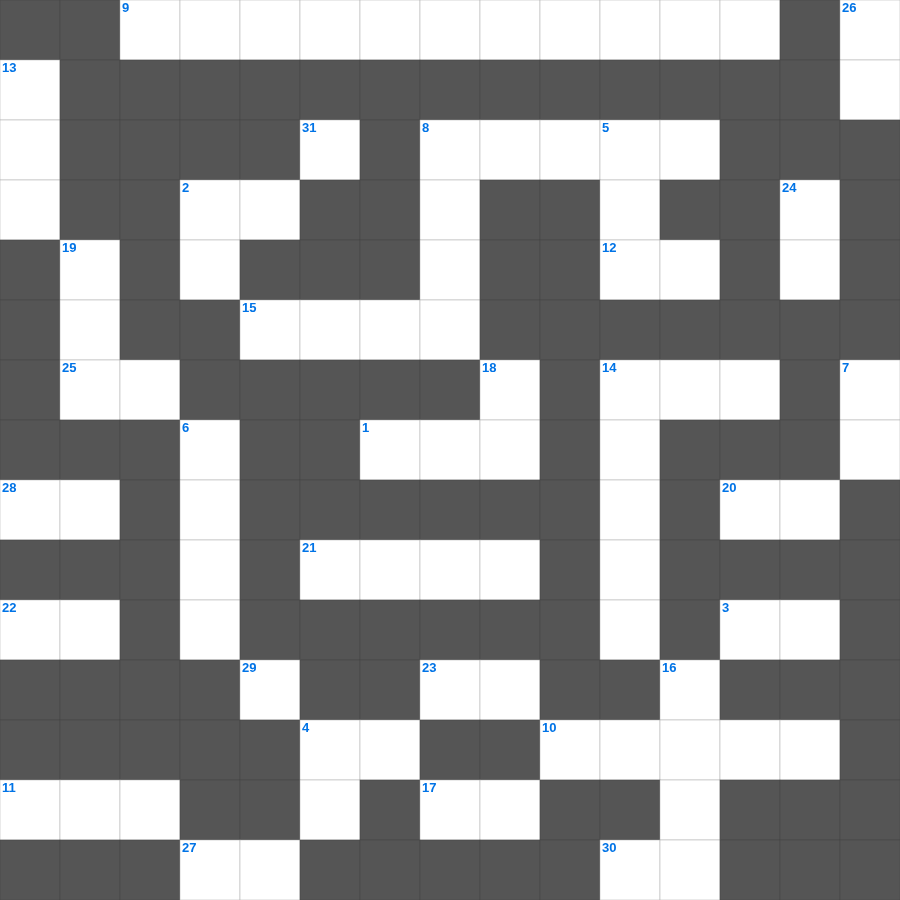

예레미야: 눈물의 선지자
📌 서비스 정의
십자가로세로는 교회 주보와 주일학교에서 사용할 수 있는 성경 기반 가로세로 퍼즐 서비스입니다. 성경 인물, 사건, 핵심 구절을 바탕으로 제작되었습니다. 온라인 풀이 및 인쇄 기능을 제공합니다.
📖 예레미야란?
예레미야는 유다의 멸망을 눈물로 예언한 '눈물의 선지자'의 메시지를 담은 책으로, 회개의 촉구와 새 언약에 대한 소망을 함께 전합니다.
📚 예레미야의 주요 사건·주제
예레미야의 소명 · 거짓 선지자들과의 대립 · 유다의 멸망 예언 · 새 언약 예언(예레미야 31장) · 예루살렘 함락
예레미야를 주제로 한 예레미야 낱말 퍼즐입니다. 35개의 단어를 맞춰보세요! 가로세로 낱말 퍼즐 형식으로 예레미야의 핵심 내용을 재미있게 복습할 수 있습니다.

📝 가로 힌트
1. 가나 혼인잔치에서 물이 이것이 된 기적
2. 영들 분별함과 각종 이것 말함
3. 여호와 이것: 평강의 하나님
4. 주 예수를 믿으라 그리하면 너와 네 집이 이것을 받으리라
8. 바울과 실라가 감옥에서 한 행동
9. 수가성 여인과 물가에서의 대화
10. 야곱이 형의 낯을 피해 도망가다 꿈을 꿈
11. 야곱이 축복을 받기 위해 팔에 붙인 것
12. 예수님이 우리 죄를 대신해 돌아가심
14. 언어가 혼잡해져 사람들이 흩어지게 된 탑
15. 성경 인물 중 가장 장수한 사람은?
17. 성령의 9가지 열매 중 두 번째
20. 요나가 다시스로 가기 위해 배를 탄 항구
21. 빌라도가 군중의 요구에 예수님을 넘겨주고 한 행동
22. 실로암 못에서 눈을 씻고 보게 된 사람
23. 언약궤를 덮고 있는 두 천사 형상
25. 백합화는 솔로몬의 이것보다 더 아름답다
27. 나의 이것을 너희에게 주노라
28. 아합 왕이 뺏으려 했던 포도원 주인
29. 가인이 아벨을 죽인 도구(전통적 해석)
📝 세로 힌트
2. 모든 것 위에 믿음의 이것을 가지고
4. 어려운 이웃을 돕는 일
5. 하나님께 노래로 영광 돌리는 팀
6. 하나님의 말씀을 가르치고 배우는 곳
7. 베드로와 안드레의 직업
8. 항상 이것하라
13. 나는 알파와 이것이요
14. 이스라엘이 바벨론으로 끌려간 사건
16. 기름 부음 받은 자
18. 극히 값진 이것 하나
19. 하나님의 보좌 앞 일곱 등불
24. 진리의 이것 띠
26. 병 고치는 은사와 이것을 행함
31. 분향단에서 피우는 거룩한 것
🧑🏫 교회 교육 자료 활용
이 퍼즐은 주일학교 교재 추천 자료로 활용할 수 있고, 주일학교 주보에 넣기 좋은 분량으로 구성되어 있습니다. 수업용 주일학교 교안에 활동지로 붙이거나, 예배 후 복습용 주일학교 공과교재로 바로 사용할 수 있습니다.
🏷️ 키워드
예레미야 낱말 퍼즐, 예레미야, 십자가로세로, 성경퀴즈, 말씀퀴즈, 가로세로퍼즐, 주일학교 교재 추천, 주일학교 주보, 주일학교 교안, 주일학교 공과교재